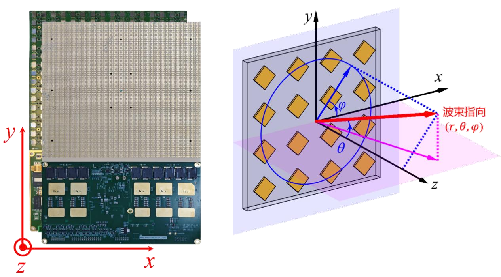
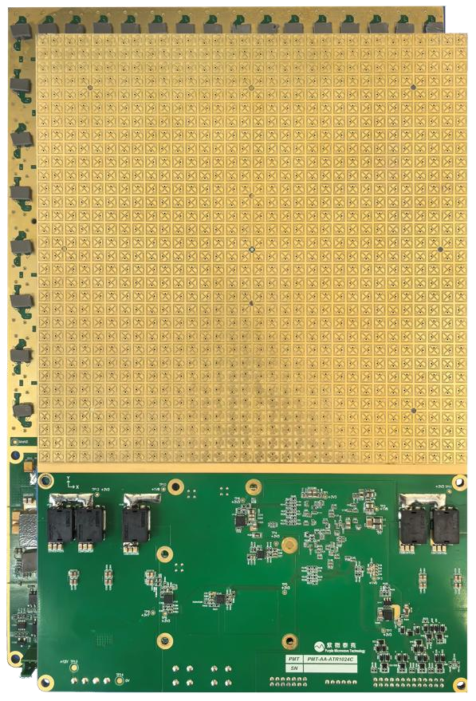

PAA-ATX1024Na
全极化 Ka 频段 1024 单元相控阵天线发射组件
采用 1024 个天线贴片单元与 2048 个独立发射通道，支持线极化及左、右旋圆极化切换。集成波束赋形算法，支持射频通道校准、射频直接输入、温度检测及自检，可配合基带设备开展后续开发。
- 工作频段
- 27.5–31 GHz
- 天线 / 发射通道
- 1024 单元 / 2048 通道
- 天线极化
- 线极化、左/右旋圆极化可切
- 法向 EIRP
- ≥46.5 dBW常温发射模式 Psat；默认工作模式
更多技术规格
- 频谱带宽
- 大于 1 GHz
- 波束
- 单波束，单路数据流
- 波束覆盖
- 离轴角 ±60°；方位角 0–360°
- 波束切换时间
- ＜60 μs实时波束赋形计算，精度到 0.1°
- 供电电压
- +24 V
- 饱和发射功耗
- 最小 200 W；典型 240 W；最大 300 W供电与控制电平表，发射模式
- 建议工作温度
- −40℃–+70℃
- 尺寸
- 157 × 256 × 13 mm
- 重量
- 430 g
- 控制协议
- RS422、SPI
- 射频输入接口
- 2.92K

PAA-ATC1024Na
双圆极化 Ka 频段 1024 单元相控阵天线发射组件
采用 1024 个天线贴片单元与 2048 个独立发射通道，支持左、右旋圆极化切换。集成波束赋形算法，可进行快速波束指向切换，并提供图形化上位机与波束控制接口协议。
- 工作频段
- 27.5–31 GHz
- 天线 / 发射通道
- 1024 单元 / 2048 通道
- 天线极化
- 左/右旋圆极化可切
- 法向 EIRP
- ≥46 dBW常温发射模式 Psat
更多技术规格
- 频谱带宽
- 大于 1 GHz
- 波束
- 单波束，单路数据流
- 波束覆盖
- 离轴角 ±60°；方位角 0–360°
- 波束切换时间
- ＜60 μs实时波束赋形计算，精度到 0.1°
- 供电电压
- +24 V
- 饱和发射功耗
- 最小 68 W；典型 145 W；最大 340 W供电与控制电平表，发射模式
- 建议工作温度
- −40℃–+70℃
- 尺寸
- 256 × 157 × 13 mm
- 重量
- 410 g
- 控制协议
- RS422、SPI
- 射频输入接口
- 2.92K

PAA-ATR1024CA
Ka 频段 1024 单元相控阵天线发射组件
采用 1024 个天线贴片单元与 1024 个独立发射通道，集成天线阵列、变频模组和中频处理模块，支持通道及芯片关闭、内外参考切换，以及阵列扩展和拼接。
- 工作频段
- 27.5–31 GHz
- 天线 / 发射通道
- 1024 单元 / 1024 通道
- 波束覆盖
- 离轴角 ±70°；方位角 0–360°
- 供电电压
- +12 V
更多技术规格
- 频谱带宽
- 大于 1 GHz
- 天线极化
- 圆极化
- 波束
- 单波束，单路数据流
- 波束切换时间
- ＜60 μs实时波束赋形计算，精度到 0.1°
- 外参考输入频率
- 10 MHz外参考工作模式，典型值
- 建议工作温度
- −40℃–+70℃
- 重量
- 380 g
- 控制协议
- RS422、UDP、SPI
- 法向半功率波束宽度
- 3.5°典型值